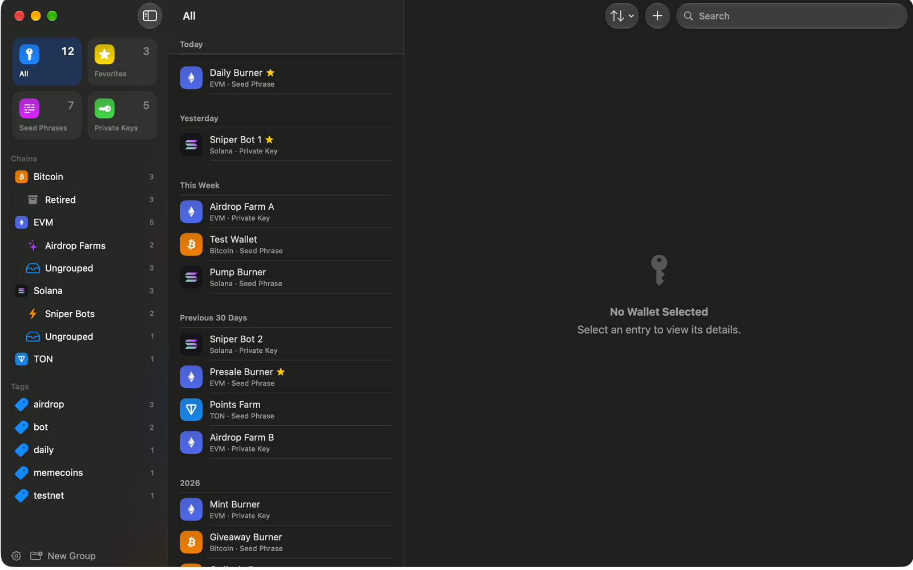
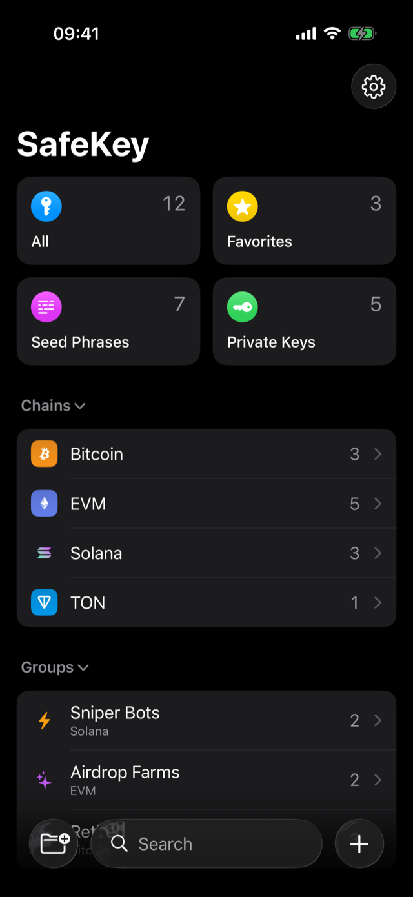
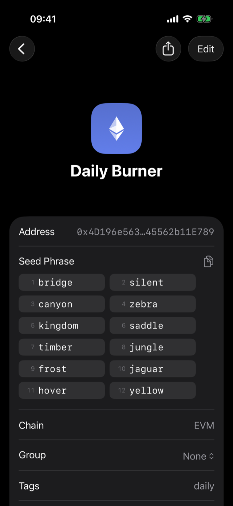
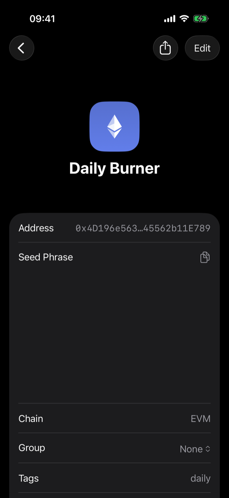

Any chain
Seed phrases and private keys for Solana, EVM chains like Ethereum, Base and Arbitrum, Bitcoin, TON and more. Twelve or twenty-four words, hex keys, whatever the wallet gave you.
iPhone · iPad · Mac
SafeKey keeps the throwaway and low-value wallets you'd otherwise leave in Notes, screenshots or chats encrypted and in one place. Seed phrases and private keys for any chain, opened with Face ID, invisible to screenshots.
Made for burner wallets. SafeKey is not built to hold significant funds. Keep larger amounts in dedicated, secure storage. The app says so on its first screen.
Requires iOS 26 or macOS 26. No account, no servers, no analytics.


The sniper bots, the airdrop farms, the mint wallets, the "I'll only put $200 in this" wallets. One vault, searchable, in the shape of Apple's Passwords app.
Seed phrases and private keys for Solana, EVM chains like Ethereum, Base and Arbitrum, Bitcoin, TON and more. Twelve or twenty-four words, hex keys, whatever the wallet gave you.
The whole vault is AES-256-GCM encrypted under a key derived from your master password. The password itself is never stored anywhere.
Unlock with biometrics backed by the Secure Enclave. The app tries Face ID the moment you come back to it, and reopens the wallet you had open.
A revealed key is on your screen and nowhere else. Screenshots, screen recordings and mirroring show an empty row where the key is.
Switch apps and the vault is locked and covered. Copied secrets are marked concealed and cleared from the clipboard after the interval you choose.
Sort wallets by chain and group, tag them, favorite the ones you touch daily, and search across everything. It can also derive a Solana address from a secret, so you can check a key was recorded correctly.
SafeKey stores text you give it and nothing else. It does not touch the chain, and it does not touch our servers, because there are none.
No sign-up, no email, no login. Your master password is the only credential, and it exists only in your head.
The app makes no network connection on its own. Turn on iCloud sync and only ciphertext moves, through your own iCloud account. We never see it.
No tracking, no telemetry, no advertising library. Every line in the app is ours or Apple's.
SafeKey never connects to a blockchain, never shows a balance and never sends or signs anything. It cannot move funds because it cannot see them.

These two images are the same screen, captured the same second. The one on the right is what a screenshot, a screen recording or a mirrored display gets: an empty row where the seed phrase is.

SafeKey is a big step up from a Notes file, not a replacement for serious storage. It says so on the first screen, and won't let you past it without acknowledging it.
Keep one vault on iPhone, iPad and Mac through your own iCloud, end-to-end encrypted. Off until you switch it on.
Export the encrypted vault file and keep it wherever you like. On the Mac, optionally keep a copy in iCloud Drive.
Erase the vault after a chosen number of wrong passwords. On the Mac, add a USB security key as a cryptographic second factor.
The iPhone and iPad app is in beta on TestFlight. The App Store release and the notarized Mac download follow with version 1.0.
Beta on TestFlight. Install Apple's TestFlight app, then open the invite.
Request a beta inviteA notarized download, outside the Mac App Store. Same vault, with Touch ID, a USB security key option and windows that come out blank in screen captures.
Arrives with 1.0SafeKey – Crypto Key Vault is being prepared for the App Store. The listing will link from here when it is live.
Arrives with 1.0